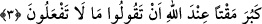

üzerine, ahde vefayı terk ettikleri için onları ayıplamak üzere bu âyet-i kerîme nâzil
oldu.
Âyet-i kerîme’nin mânâsı şöyledir: Neden yapmayacağınız hayır ve iyilikleri,
yapacağız diyorsunuz? Gerçekte onların ayıplanma ve azarlanmaları iyi olan bir işi
yapmamalarından dolayıdır. Bu âyette ayıplama ve azarlamanın onların sözlerine
yöneltilmiş olması, onların yaptıkları kötülüğün, yalnız yapılacağına söz verilen hayrı
işlememekten ibâret değil, aynı zamanda iyilik saymakta oldukları şey için, verilen sözü
de yerine getirmemekten dolayı günahlarının katlanmış olduğuna dikkat çekmek içindir.
Şâyet söylediklerinizi niçin yapmıyorsunuz? denilseydi, çirkin olanın yalnız vaad
edileni terk etmekten ibâret olduğu anlaşılırdı ki, sorudan kasdedilen gerçek mânâ bu
değildir. Her şeyi gerçek yönüyle bildiği için Allah Teâlâ’nın böyle bir soruyu sormağa
gerek duyması imkânsızdır. Sorudan esas maksad, yapmayacağı bir iyiliği insanın kendi
söylemesini ayıplamaktır. Şâyet insan, yapmadığı bir şeyi geçmişte veya şu anda
yaptığını haber vermiş olsaydı, yalancı olurdu. Eğer, gelecekte bir iyiliği yapacağını
vaad edip yapmayacak olursa sözünden dönmüş olurdu. Her ikisi de kötülenmiştir.
Keşşaf’ta da ifâde edildiği gibi bu söz hem yalanı, hem de verilen sözden dönme
ayıplarını kapsamaktadır. Bu durum verilen sözün bir özür nedeniyle yerine
getirilmemesi gibi değildir. Bunun bir günahı yoktur.
Arâisü’l-Baklî adlı eserde şöyle denilmiştir: Allah Teâlâ müridleri, ulaşmadıkları
makamlara ulaşmış olduklarını iddiâ etmekten men etmektedir ki, yalan iddiâsında
bulunarak Allah’ın düşmanlığına mâruz kalmasınlar ve Hak yoldan ayrılmış olmasınlar.
Yine bazı hakları vermemekten, devlet büyüklerini de sakındırmaktadır. Sözlerini yerine
getirmeyen ve hak sâhiplerine haklarını vermeyen kimse Hakk’a ulaşamaz. İlâhî
meşiyyetin ve kudret hükümlerinin câri olduğu, izzet sâhibi Allah’ın kudretinin esiri
bulunan kulun gerçekte fiili de yoktur. Bu nedenle, Allah’ın kendisine verdiği gücü
dikkate almadan: “Ben yaptım, ben geldim ve ben şâhid oldum” diyen kimse Mevlâ’sını
unutmuş ve kendisine âid olmayan bir şeyi haksız olarak iddiâ etmiş olur. Yaptığı bir
ibâdeti kendinden gören kimsenin bu tâati isyana daha yakındır. Çünkü Allah’ın kuvvet
ve imkân verdiğini unutmak mânevî körlüktür.
et-Te’vilâtü’n-Necmiyye’de şöyle denilmiştir: “Ey taklidçi mü’minler! Bedenî her
çeşit lezzetleri ve her türlü hayvanî şehvetleri işlemekte olduğunuzu göre göre
içinizdeki kalp dili ile övdüğünüz dünyayı dışınızdaki dille neden kötülüyorsunuz? Veya
dilinizle övdüğünüz cihadı kalbinizle niçin kötülüyorsunuz? İşte sizin bu tutumunuz,
Hak’tan yüz çevirip nefsinize ve dünyaya yöneldiğinizi gösterir. Âyet-i kerîme’de şöyle
buyrulduğu gibi bu davranış Allah katında büyük bir nefretle karşılanır.
3. Yapmayacağınız şeyleri söylemeniz, Allah katında büyük bir nefretle karşılanır.